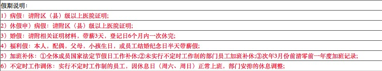

This chapter explains ba bla bla
Chapter 4
This chapter explains ba bla bla
请点击这里，跳出当前框架！
点击就能发送邮件了哦



My First paragraph
this is
another
paragraph
with line breaks
this is three paragraph
文本作为链接是一个指向本网站中的一个页面的链接。
This is a paragraph.
内联元素：行内不折行显示，自带css样式 内部的另一部分小块
this text is Verdana and red
This text is in Times and green
This text is 30 pixels high
我就是要看下标subscript：描述下标
我就是要看上标superscript：描述上标
一打有 二十 十二件。大多数浏览器会改写为删除文本和下划线文本，一些老式的浏览器会把删除文本和下划线文本显示为普通文本
预格式和计算机相关的格式：使用 pre标签对空行和空格进行控制：描述预格式的文本
var person = {
firstName:"Bill",
lastName:"Gates",
age:50,
eyeColor:"blue"
}
Computer code：定义计算机代码
定义变量: 如 E = mc2
引用地址和术语开始了
定义地址 written by Donald DuckVisit us at: Example.com Box 564,Disneyland USA在某些浏览器中，当你把鼠标移到缩略词上时，title可用于展示表达的完整版本。
仅对于 IE 5 中的 acronym 元素有效。
对于 Netscape 6.2 中的 abbr 和 acronym 元素都有效。
如果您的浏览器支持 bi-directional override (bdo)，下一行会从右向左输出 (rtl)；
我的引文：这是短引用
以下内容引用自 WWF 的网站：
这是长的引用。五十年来，WWF 一直致力于保护自然界的未来。 世界领先的环保组织，WWF 工作于 100 个国家， 并得到美国一百二十万会员及全球近五百万会员的支持
The Scream by Edward Munch. Painted in 1893.
WHO成立于 1948 年
| 100 |
| 100 | 200 | 300 |
| 姓名 | 电话 | |
| billgatece | 1825789 | 9278358789 |
| 姓名 | 邱少依 | |
| 电话 | 我就是要看电话 | 13759892587 |
| 2💰t7987529878 | 2u359871298756 | |
|
这是一个段落。 这是另一个段落。 |
这是单元格的一个表格
|
||||
|
这是单元格的一个表格
|
Hello |
注释：frame:值为box、above、below、hsides、vsides，分别表示横线出现的显示样式。该属性无法在 Internet Explorer 中正确地显示。
| Month | Savings |
|---|---|
| January | $100 |
开始使用类class属性了：
中国
>London is the capital city of England. It is the most populous city in the United Kingdom, with a metropolitan area of over 13 million inhabitants.
Standing on the River Thames, London has been a major settlement for two millennia, its history going back to its founding by the Romans, who named it Londinium.
开始使用id属性了：
London is the capital city of England. It is the most populous city in the United Kingdom, with a metropolitan area of over 13 million inhabitants.
Standing on the River Thames, London has been a major settlement for two millennia, its history going back to its founding by the Romans, who named it Londinium.
London is the capital city of England. It is the most populous city in the United Kingdom, with a metropolitan area of over 13 million inhabitants.
RWD：指的是响应式 Web 设计（Responsive Web Design）：方式1见RWD1.html; 方式2 使用Bootstrap来操作RWD2.html
框架的时间到了: 每份HTML文档称为一个框架
详见:框架专用.html 包含：测试frame基本使用、导航使用、iframe的使用设置背景:属性值可以是十六进制数#000000、RGB值rgb(0,0,0)或颜色名black
适配 不支持 JavaScript 的浏览器, 将显示为 noscript 元素中的文本。
® £ < 然后查看结果
scheme 常见因特网服务类型：http(超文本协议)、 https（信息交换安全的加密协议）、 ftp（文件上传和下载的传输协议）、 file（本地文件）